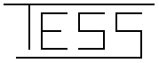
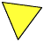
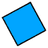

|
 |
| English Español 한국어 |
|
Tess is a program for drawing symmetric illustrations. While you draw, Tess will automatically maintain the plane symmetry group you have chosen; 24 rosette, 7 frieze, and 17 wallpaper groups are provided. All 28 (/ 29) Heesch tilings are also supported.
This version of Tess is fully-functional (except for saving) but is only for evaluation purposes until you have obtained a license. You can purchase a license online through
http://
To visit the Tess web site, go to
http:// We at Pedagoguery Software Inc. welcome comments and feedback from our users. We may be reached via email at peda@peda.com and via postal mail sent to
Pedagoguery Software Inc. This collection of files may be freely redistributed, as long as all files remain together and are not modified. Tess and all of the files included in this package are the copyright property of Pedagoguery Software Inc.
 Tess es un programa para dibujar ilustraciones simétricas. Mientras usted dibuja, Tess mantendrá el grupo de simetría plano que haya elegido; se proporcionan 24 grupos de rosetones, 7 grupos de frisos, y 17 grupos cristalográficos planos. También se tratan las 28 (/ 29) pavimentaciones de Heesch.
Esta versión es completamente funcional (excepto para guardar) pero es sólo para evaluación hasta que usted obtenga una licencia.
Para registrar puede visitar
http://
Para visitar la página web de Tess, vaya a
http:// Nosotros en Pedagoguery Software Inc. damos la bienvenida a comentarios y reacciones de nuestros usuarios. Nos pueden contactar via e-mail en peda@peda.com. Nuestra dirección postal es
Pedagoguery Software Inc. Esta colección de archivos puede ser libremente redistribuida, siempre y cuando todos los archivos permanezcan juntos y no sean modificados. Tess y todos los archivos incluidos en este paquete son propiedad de copyright de Pedagoguery Software Inc.
 Tess 는 대칭적인, 즉 규칙성이 있는 그림을 그리는 프로그램입니다. 사용자는 24 개의 꽃무늬 변환군, 7 개의 줄무늬 변환군, 17 개의 벽지무늬 변환군 중에서 하나를 선택하고 Tess 화면에 그림을 그리면 됩니다. Tess 는 선택된 변환군에 대한 대칭성이 유지되도록 자동으로 그림을 그려 줍니다. 28 (/ 29) 개의 Heesch 타일링 또한 지원됩니다.
이 프로그램은 파일로 저장하는 기능을 제외하고 Tess 의 모든 기능을 가진 평가판 프로그램입니다.
사용권을 구입하기 전에는 평가 목적으로만 사용할 수 있으며
사용권은 http://
Tess 의 홈페이지는 http:// Pedagoguery Software Inc.에서는 사용자 여러분의 의견을 환영합니다. 의견은 이메일 주소 peda@peda.com 으로 하시거나 다음 주소로 우편으로 보내 주시면 됩니다.
Pedagoguery Software Inc. Tess 및 거기에 따르는 파일들은 Pedagoguery Software Inc. 의 지적 재산입니다. 모든 파일이 변형되지 않은 상태로 함께 있는 한에서 자유롭게 복사하거나 나누어 줄 수 있습니다. |